class: center, middle #How closely do close relatives resemble each other? ## Will Cornwell and Andrew Letten ### UNSW, Australia --- class: center, middle --- class: center, middle <p>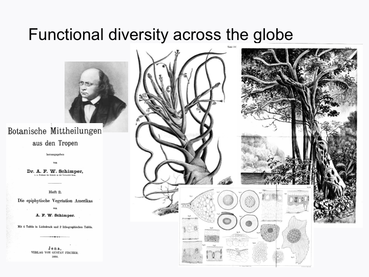</p> --- class: center, middle <p>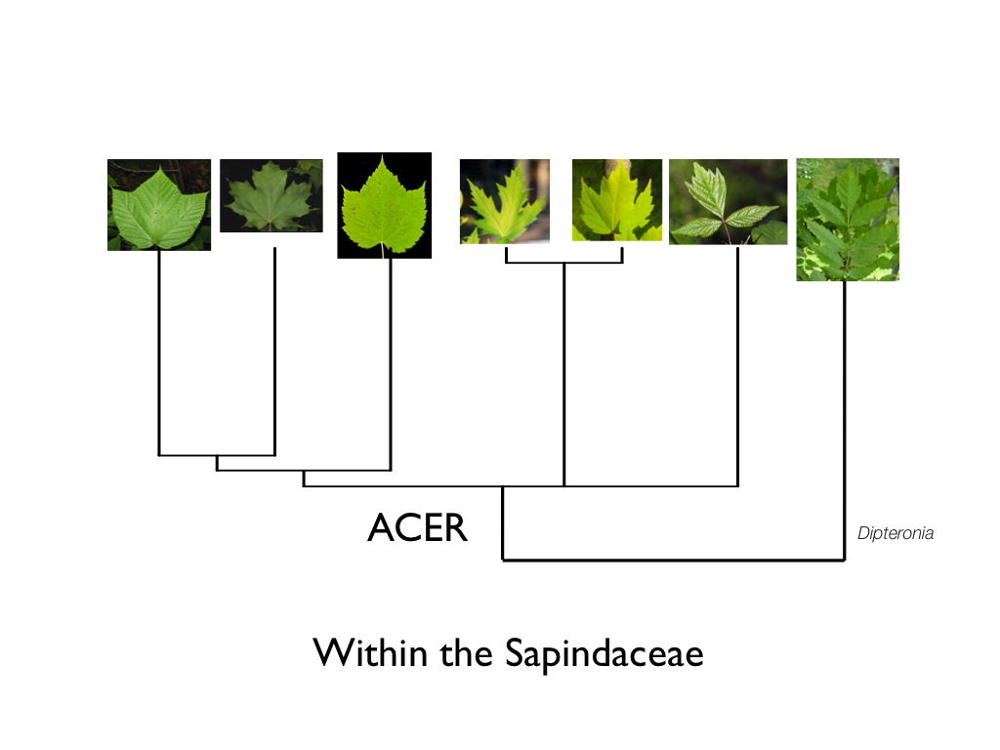</p> --- layout: false .left-column[ ## How closely do close relatives resemble each other? ] .right-column[ ### Theory built on this includes: - Metrics of community phylogenetics - Connection between phylogenetic and functional diversity - Patterns of functional and phylogenetic diversity in space and time - Approaches for "gap-filling" functional databases ] --- class: center ##Question: #What is the scaling of functional and phylogenetic distance within (a) simulations and (b) plants? --- class: center <p>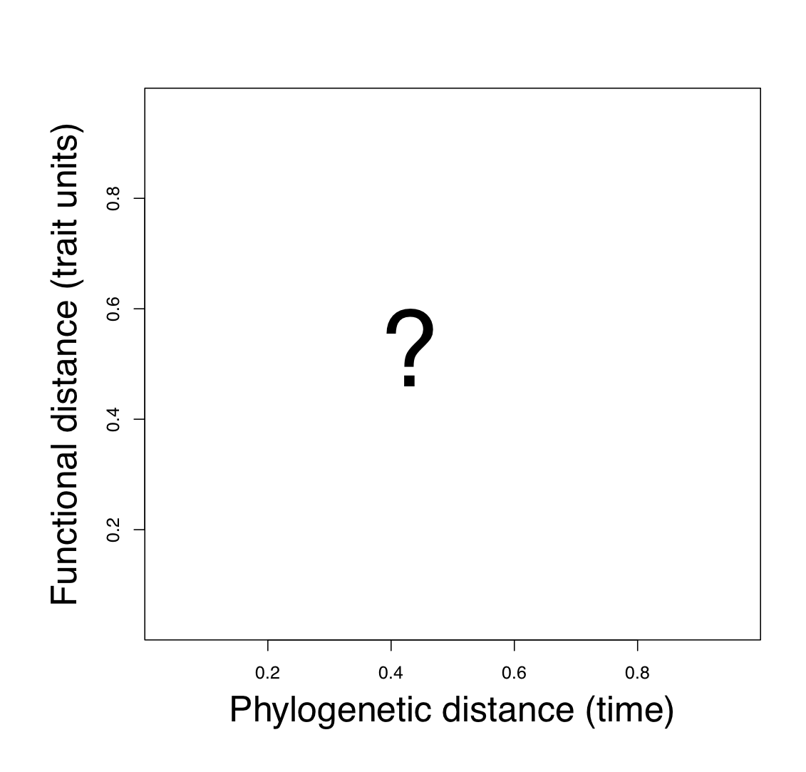</p> --- class: center <p>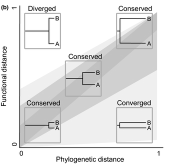</p> Caddotte et al. 2013, Ecology Letters, prediction under Brownian motion --- layout: false class: center .left-column[ ## The math of Brownian motion ] .right-column[ $$\frac{\partial\rho}{\partial t}=\sigma^2\frac{\partial^2\rho}{\partial x^2}$$ <img src="http://upload.wikimedia.org/wikipedia/commons/d/d3/Albert_Einstein_Head.jpg" alt="Drawing" style="width:150px" align="center"/> the mean displacement is therefore proportional to the square root (*Quadratwurzel*) of the time -Einstein 1905 (see also Felsenstein 1985) ] --- class: center, middle <p>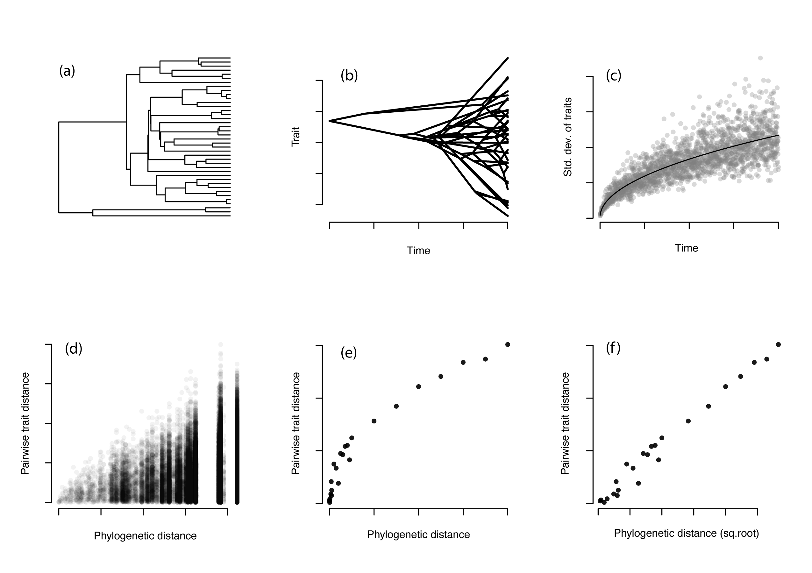</p> --- <img src="http://upload.wikimedia.org/wikipedia/commons/d/d3/Albert_Einstein_Head.jpg" alt="Drawing" style="width:150px" align="center"/> was right --- layout: false class: center .left-column[ ##Traditional metrics of community phylogenetics (see Webb et al. 2002) ] .right-column[ <p>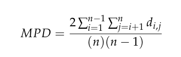</p> simply becomes: <p>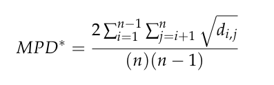</p> ] --- layout: false class: center .left-column[ ## A more realistic model of trait evolution improves power of phylogenetic methods ] .right-column[ <p>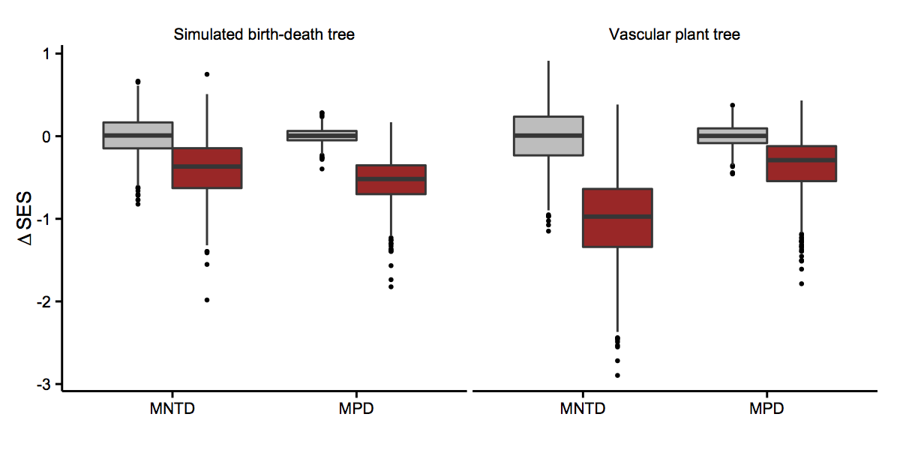</p> methods follow Kraft et al. 2007 ] --- .left-column[ ## Trait evolution models ] .right-column[ - Brownian motion <img src="http://upload.wikimedia.org/wikipedia/commons/6/6d/Translational_motion.gif"> - Mean-reverting processes (e.g. Orstein-Uhlembeck process) - Heterogeneous models ] --- class: center, middle <p>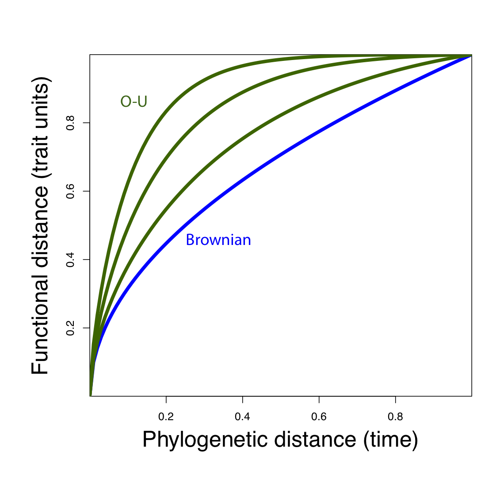</p> --- class: center, middle #Is the Brownian model supported by empirical relationship? ##(for plants) --- class: center, middle <p>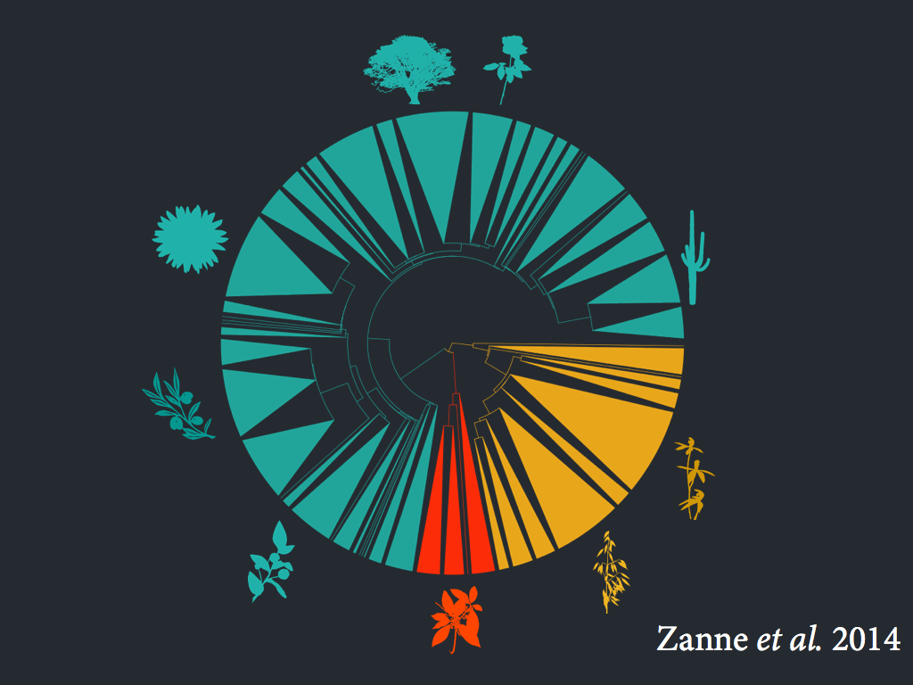</p> 32,000 species molecular time-tree, freely availble at DataDryad (Zanne, Tank, Cornwell et al. 2014) --- class: center, middle Methods: 1. Tip values (incorporating intra-specific variation) 2. Continuous variabes uses Geiger v2 (Harmon et al. 2013) 3. Discrete using CorHMM (Beaulieu et al. 2013) <p>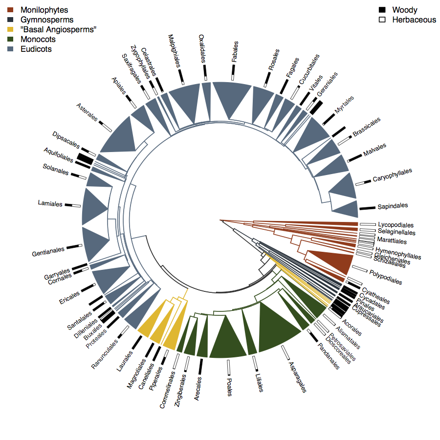</p> --- class: center, middle <img src="http://upload.wikimedia.org/wikipedia/commons/b/b3/Medicago_italica_root_nodules_2.JPG" alt="Drawing" style="width:300px" align="middle"/> Potential to fix N -- 9,156 species (NOTE: NOT ALL Fabaceae can fix N!) <img src="http://upload.wikimedia.org/wikipedia/commons/d/d9/Coconut_green.JPG" alt="Drawing" style="width:300px" align="middle"/> Seed size (Kew) -- 22,817 sp --- class: center, middle .left-column[ ##Model selection approach ] .right-column[ ###Split the Zanne et al. tree into many sub-clades, fit all models and compare using AICw ] --- class: center, middle ##"Brownian" versus "OU" versus "Early Burst" for seed mass <p>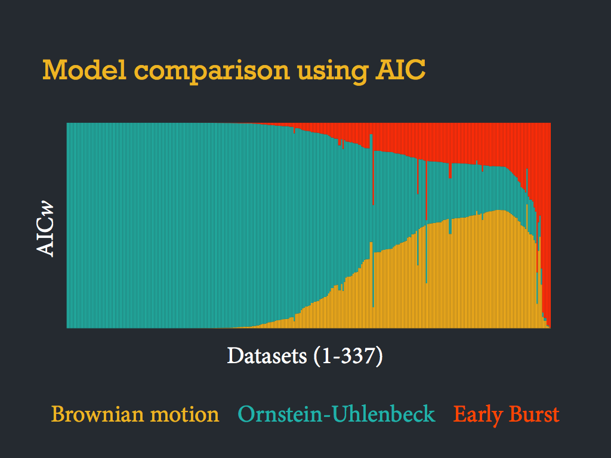</p> --- .left-column[ ##Looking for heterogeneity in the evolution of N-fixing ] .right-column[ - 9,156 species-based observations on the potential to fix N - Find the most likely combination of "rate heterogeneity" - One rate class is much more likely to evolve the symbiosis ] --- class: center, middle <img src="http://willcornwell.org/wp-content/uploads/2014/06/n-fix_phylo.jpg" alt="Drawing" style="width:700px" align="middle"/> --- layout: false .left-column[ ##In conclusion ] .right-column[ - Brownian model does NOT predict linear phylogenetic-functional distance relationship - An evolutionary distance of 1 - 6 million years is larger than a difference of 101 - 106 million years - At large phylogenetic scales heterogeneity is likely the rule not the exception - Among the current "simple" models OU is usually a better fit than Brownian, implying a more sharply curvi-linear relationship ] --- class: center, middle <p>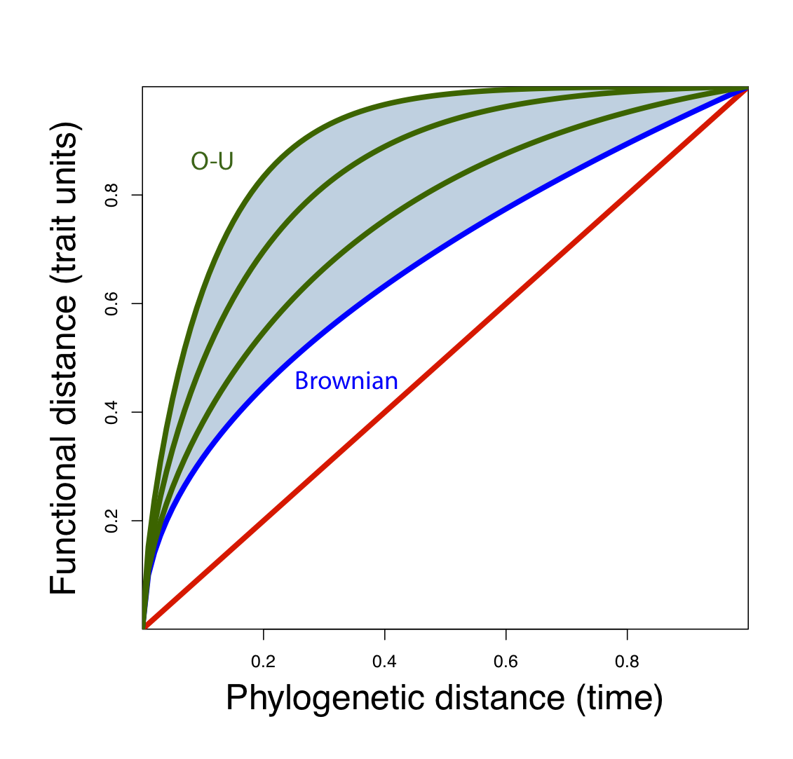</p> --- class: center, top ###The whole talk is available at <a href="http://wcornwell.github.io/conferenceTalks/atbc_phylo_scaling.html">http://wcornwell.github.io/conferenceTalks/atbc_phylo_scaling.html</a> -- ###Three papers described in this talk: ``` 1.Letten and Cornwell. 2014. in press. Methods in Ecology and Evolution 2.Werner, Cornwell, et al. 2014. Nature Communications. 3.Pennell, FitzJohn, Cornwell, and Harmon. 2014. preprint. ``` -- ### Resources ``` 1. 32,000 species molecular tree at Dryad (Zanne et al. 2014) 2. 9,000 species N-fixing database at Dryad (Werner et al. 2014) ``` -- ###Thanks to VU Amsterdam, NESCent, UNSW, and NWO (Dutch Science Foundation)!